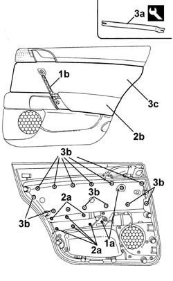
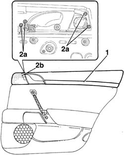

7010C48 Rear door opening INNER HANDLE/TRIM (one), lh or rh - r r
- Path
- Procedures > 70 FITTINGS > 7010 passenger compartment rear side doors > 7010C REAR SIDE DOOR LOCK CONTROL CONTROLS > 7010C48 Rear door opening INNER HANDLE/TRIM (one), lh or rh - r r
- Kind
- repair procedure (removal / refitting; the operation number is the code)
- Applies to
- all engines; all production periods
- Interactive page
- https://sloeber94.github.io/elrnDB-lThss/en/#/111203
Applies to: all engines; all production periods
 Removing
Removing
 Refitting
Refitting- Disconnect the negative battery terminal.
See in Op. 7010E10 Rear side door INNER PANEL - R.R. or Replace
1. Undo the fixing bolts (1a) and remove the inner grip (1b).
2. Undo the fixing bolts (2a) and remove the armrest (2b).
3. Release the retaining springs (3b) using the tool (3a) and remove the inner panel trim (3c).
 | Description | Code | Function |
|---|---|---|---|
3a | Knife | 1.878.077.000 | Removing rear door inner panel cover |

Applies to: all engines; all production periods
1. Release the moulding and remove it.
2. Undo the bolts (2a) and remove the inner handle/trim (2b).

Applies to: all engines; all production periods
Refitting
Removing- Place the inner handle/trim in position and tighten the fixing bolts.
- Fit the moulding in the housing checking that the springs are correctly positioned.
- Fit the inner panel trim in the housing and secure it using the retaining springs.
- Fit the armrest and fasten it using the bolts.
- Fit the inner grip and tighten the fixing bolts.
See in Op. 7010E10 Rear side door INNER PANEL - R.R. or Replace
- Connect the negative battery terminal.
- Check that the component is working.